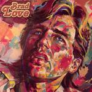

Home Artist links Label link

Brad Love - Colours
| Artist: | Brad Love |
| Title: | Colours |
| Label: | AV Recors AV-1001 |
| Length(s): | 34 minutes |
| Year(s) of release: | 1982/2004 |
| Month of review: | [09/2005] |
Line up
Brad Love - vocals, piano, synthesizer, compositions
Paul Madden - synthesizer, programming
Michael Boddicker - vocoder, synthesizer
Ed Greene - drums
Craig Kramph - drums on 4, 8
Steve Forman - percussion
John Hug - production, guitars
Rick Wilson - flugelhorn
Tracks
| 1) | To Be In Love | 3.10
|
| 2) | Colour Me | 3.18
|
| 3) | Warrior | 2.46
|
| 4) | When I'm With You | 2.46
|
| 5) | Midnight By The Sea | 4.22
|
| 6) | Living Once Again | 3.36
|
| 7) | Let Go | 2.25
|
| 8) | My Boat | 4.13
|
| 9) | Hot Cinders | 3.51
|
| 10) | Turning Of The Earth | 4.03
|
Summary
Brad Love is busy reconsistuting his heritage. It started
out with the self titled Aviary album, one of the best AOR
albums I know, and he also released a solo studio record
recently. In the eighties he made another solo record. This is it.
The music
To Be In Love sets the scene for this album: melodic piano music, and
excellent vocals that remind of no-one else, except Brad Love.
There is something about the compositions of Brad Love that make
them instantly recognizable. It is not just the vocals, but the style
of the vocal melody. If I must put this song into any genre, I think
pop music comes closest, but it is in that case certainly sophisticated pop music. The music and lyrics are very optimistic, with a string like
accompaniment on the synths. Colour Me opens in a darker style, but it
soon becomes lighter. The music often reminds me of Aviary, it may seem
simple and accessible at first, but there is quite a lot of variation in
the music, using the vocals as the lead focus in a varied way.
Although the music does have elements of the eighties, in the sound,
it does not strike me as dated.
Warrior is rather a weird song. It seems the vocals are further away
now the beat strengthens and the keyboards pipe away. There is some mechanic
about this song, something Gary Numan and/or Sparks like. A complex and variegated
pop song. When I'm With You brings us back to the piano dominated love
songs, with the vocal melodies being fine as ever. Still, the song itself
leans a bit too much in the direction of simple pop music.
Midnight By The Sea is more of an orchestral track with march rhythms,
minimalistic piano and string synths. Aviary had quite a bit of Queen
influences, and many of the songs on here I can easily envision Mercury
singing them, although for Queen as a band they seem a bit too friendly.
Living Once Again is probably too sweet for most (who read this website), but
the vocal melody is still good. Let Go has both high pitched and somewhat
somber vocals. The chorus has uplifting backing vocals.
My Boat opens with reversed sounds, yielding something that is very synthetic
but structured in a classical way. The verses are low and somber, while the
more upbeat chorus is bombastic.
Hot Cinders is a totally different affair in which the New Wave elements
dominate. This is quite a quirky tune, with Love doing his best to sound in
as many different ways as possible. The song has a nice drive.
Turning Of The Earth is the closer of this relatively short album (no bonus
tracks guys?). This is only the third time we go over the four minute mark.
The music is bouncy this time around, with a large role for the percussion,
and the vocals sounding far away. We end in melancholc style.
Conclusion
Although Brad Love has a tendency to write love songs, his varied vocals, the
excellent melodies and the sophistication of the songs make this pop album
one that is certainly not superficial; indeed it is surprisingly complex
in arrangement. Although some songs, like Living Once
Again are pure pop music, a song like Warrior and Midnight By The Sea can
be quite distinctive and even weird. Still, for a rock audience this is not
the most suited album, it is more an album to listen with your loved one.
References are later Abba, the soft side of AOR and Queen and for the weirder
tunes, The Sparks.
© Jurriaan Hage